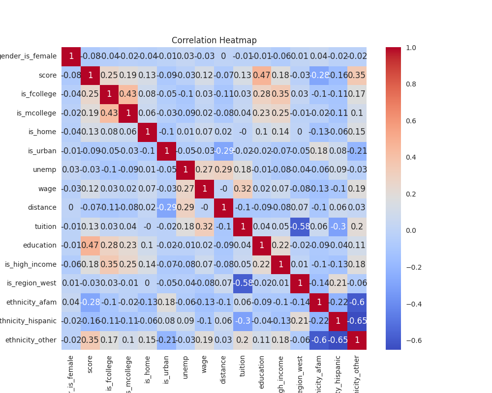
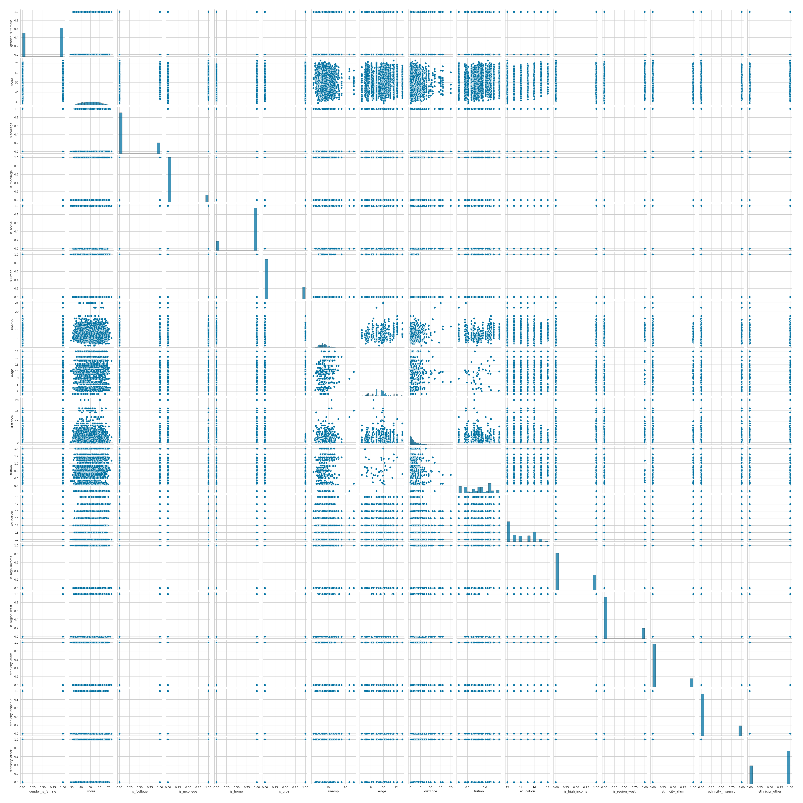

Feature Engineering
Data encoding
Categorical values features
Categorical features was coded as:
Changes
Correlation Heatmap
After transforming categorical features into numerical it is possible to generate proper heatmap correlation between features.
Correlation Heatmap generating
Output:

On this heatmap, we see that the most correlation for the score target feature comes from education,
ethnicity_other, and is_fcollege.
This means that:
- A higher amount of total education years implies the highest score, which makes sense.
- If the ethnicity is
other(not African-American or Hispanic), the score is higher. - If the
is_fcollegeis set toTrue(father finished college), the score will be higher. - Similarly, there is a correlation between
is_mcollege(mother finished college), but it is lower than the previous one.
Pairplot
Output: 
Note
This plot is enormous, so to examine it just do a right-click and "Open image in new tab".
This plot just shows the correlation, but in slightly "other way". So the meaning is the same.
Scaling features
Features needs to be scaled in order to achieve the best result from our model.
As a scaler we'll use StandardScaler from sklearn.
Scaling data
education type was changed to float, so one hot encoded features will stay the same as before.
Result (only first two rows) of the scaling:
| gender_is_female | score | is_fcollege | is_mcollege | is_home | is_urban | unemp | wage | distance | tuition | education | is_high_income | is_region_west | ethnicity_afam | ethnicity_hispanic | ethnicity_other |
|---|---|---|---|---|---|---|---|---|---|---|---|---|---|---|---|
| False | -1.349160 | True | False | True | True | -0.505635 | -1.050324 | -0.697845 | 0.219584 | -1.010536 | True | False | 0 | 0 | 1 |
| True | -0.232046 | False | False | True | True | -0.505635 | -1.050324 | -0.697845 | 0.219584 | -1.010536 | False | False | 0 | 0 | 1 |
Train test split
Before training our model data should be split into train and test. We'll use pandas masks for that.
Train test split
Output: